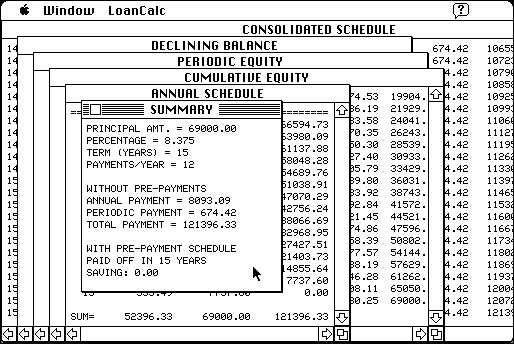

Download
LOANCALC_211a_68K.zip (332K) LOANCALC 2.2.1.a 68K repackaged into a zipped hfs disk image and checksum file. The disk image can be mounted with Mini vMac.
LOANCALC_211a_68K.sea.hqx (496K) LOANCALC 2.2.1.a 68K in the original format.
copyright: sofTouch APpLications
mod date: Dec 18, 2000
license: shareware
official url :
sofTouch APpLications - LOANCALC 2.1.1
“Will compute loan payment, declining balance, and equity schedules (running and cumulative) for fixed rate loans with or without prepayment schedules.” By Glenn Schneider. Requires System 7.

If you find these downloads useful, please consider helping the Gryphel Project, which hosts them.
Here are the md5 checksums for the downloads, signed with Gryphel Key 5:
--------- GRY SIGNED TEXT --------- add69218b31da2c55ed956bf1983d809 LOANCALC_211a_68K.zip 5e2a37aadc377f9692631fb0362bab80 LOANCALC_211a_68K.sea.hqx ------- BEGIN GRY SIGNATURE ------- Gry/4Xa8CFcUzxdN/DYr4enhRkzuG3rN0HwL7AURPJ4nS+Z6KeE0+0cKKJ5sUyWW b8jMmlheIhIrnruFtAaXvZWG9ltlK5a1Uc7HP1SPVRiwWxAjZbQxcRDVnNwnXnSI KSyiIaEO4lmhZNzKqXOjdJ6P50F0WLrzJxDI4EzxOMYb7KXwsFOu9KjP7p+yIGxQ -------- END GRY SIGNATURE --------